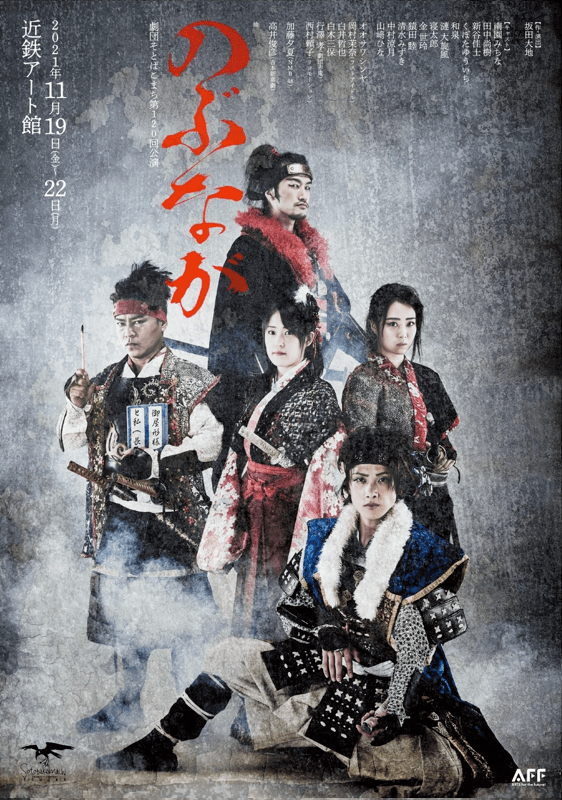

Live Streaming ,2021
Natsuha Nakamura

あらすじ
織田信長は本能寺では死んでいなかった！ならば本能寺で死んだのは…誰？
天正四年五月「天王寺砦の戦い」、孤立した明智光秀を救うため京より駆け付け最前線にて奮闘した織田信長は雑賀孫市の凶弾を受けた。脚を撃たれたものの軽傷だったとされているが、実はかなりの深手であった。
今際の際に信長がお濃に告げた一言は、お濃にとっても光秀にとっても衝撃であった。信長不在で天下を狙う織田軍。家臣たちの思惑は？そして天正十年六月二日。光秀は重大な決断をする。
果たして本能寺にて討ち取られたのは誰か？
お濃、光秀、秀吉、乱丸など、全てを信長に捧げ生きた者たちの、それぞれの想いが束ねられた夜明け。
新しい朝、歴史はどのように姿を変えたのか。